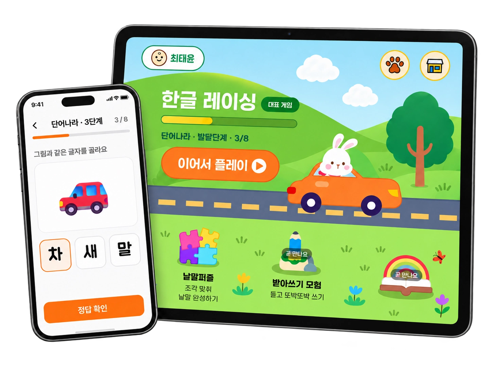
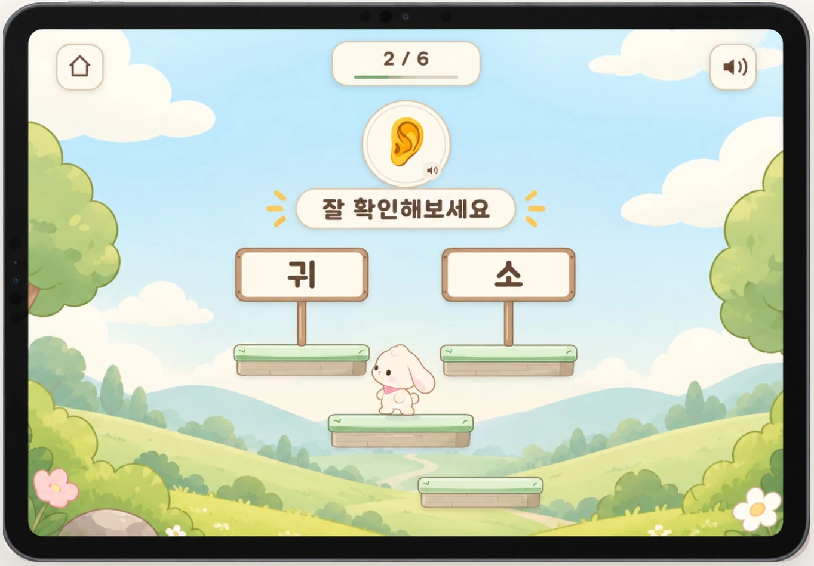
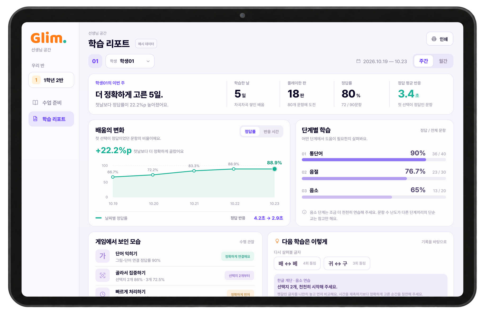
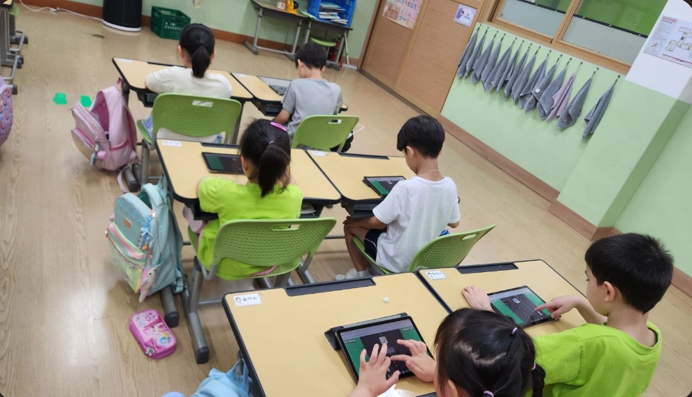
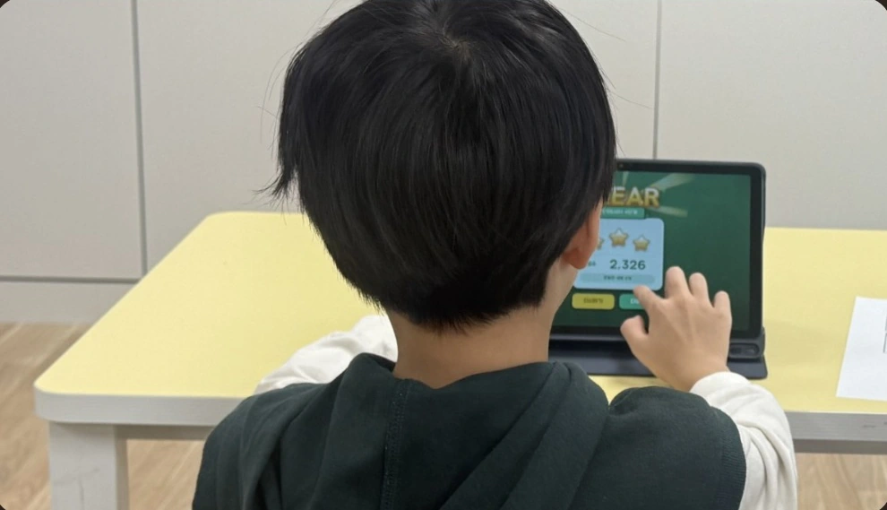

“한 번 더!” 하고 싶은 재미
달리고, 오르고, 지키는 모험 속에서
반복 학습도 자연스러운 놀이가 되도록.
아이의 속도를 존중하는 한글 학습
한글이 조금 더 어려운 아이도 자기 속도로.
즐거운 게임과 아이에게 맞는 배움으로 함께 자라요.

WHY GLIM
글림은 한글 학습에 더 많은 시간과 반복이 필요한
초등 저학년, 경계선 지능 아동을 위해 시작했습니다.
익숙한 그림과 간단한 조작, 차근차근 이어지는 학습.
아이가 스스로 도전하고 싶어지는 경험을 만듭니다.
달리고, 오르고, 지키는 모험 속에서
반복 학습도 자연스러운 놀이가 되도록.
통단어에서 음절, 음소까지.
한글의 기초를 순서대로 만나도록.
맞고 틀린 결과를 넘어,
어려워하는 순간까지 살펴보도록.
PLAY WITH GLIM
같은 한글도, 새로운 모험으로 만나면 즐거우니까요.
선택한 게임이 소리 없이 자동 재생됩니다. 게임 영역에서 Escape 키를 누르면 움직임을 멈추고, 게임 탭을 다시 선택하면 처음부터 재생합니다.
ONE STEP AT A TIME
그림으로 익숙해진 단어를 글자로 나누고,
글자를 이루는 소리까지 만나봅니다.
이후 어휘와 읽기 유창성으로 이어지는 학습을 지향합니다.
이 그림의 이름은 ‘사과’예요.
학습 원리를 보여주는 예시입니다.GLIM AI
게임 속 반응에서 경계선 지능 위험 신호를 살피고,
필요한 학습 지원으로 이어갑니다.
경계선 지능 가능성,
놀이 속 신호에서 먼저 살펴요.
반응 시간, 반복되는 오류, 수행의 변화를 함께 분석해
추가 확인이 필요한 아이를 조기에 선별합니다.
경계선 지능 위험 신호를 살펴
부모님·선생님의 다음 확인을 도와요.
어려워하는 순간에,
지금 필요한 도움을 건네요.
아이의 수행에 맞춰 힌트와 반복 학습을 연결하고,
한 걸음씩 도전할 수 있는 학습을 제안합니다.

조기 스크리닝은 위험 신호를 선별하는 참고 정보이며, 경계선 지능 여부를 확정하는 전문 평가를 대신하지 않습니다.
시제품 검증·고도화 중LEARNING, TOGETHER
학교에서의 배움이 가정에서도 이어질 수 있도록 준비하고 있습니다.
수업에 필요한 단어나 문장을 입력하고,
글림 게임에 적용하는 학급모드를 준비합니다.
 학급모드 개발 화면
학급모드 개발 화면정답 패턴, 반응 시간, 오류 유형을 살펴
다음 학습에 참고할 리포트를 준비합니다.

리포트 화면 예시 · 예시 이름 및 수치아이에게 맞는 배움을 함께 고민할 학교·기관, 부모님을 기다립니다.


MADE WITH CHILDREN
글림의 출발점은 아이들이 배우는 현장입니다.
실제 교실에서 아이의 반응과 선생님의 이야기를 듣고,
더 쉽고 즐겁게 배울 방법을 다듬고 있습니다.
2027년 2월까지 학교 현장에서 글림 제품을 실사용하며 사용성을 확인합니다.
교실에서 진행한 글림 시제품 테스트입니다.
A LITTLE MORE ABOUT GLIM
궁금한 점부터 하나씩,
편하게 살펴보세요.
A SMALL START, A BIG SMILE
가정에서의 체험부터 학교·기관의 도입까지,
편하게 이야기해 주세요.